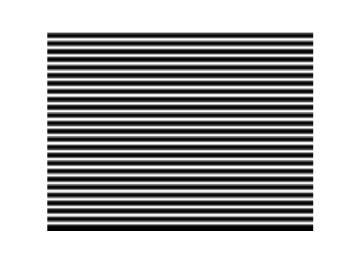
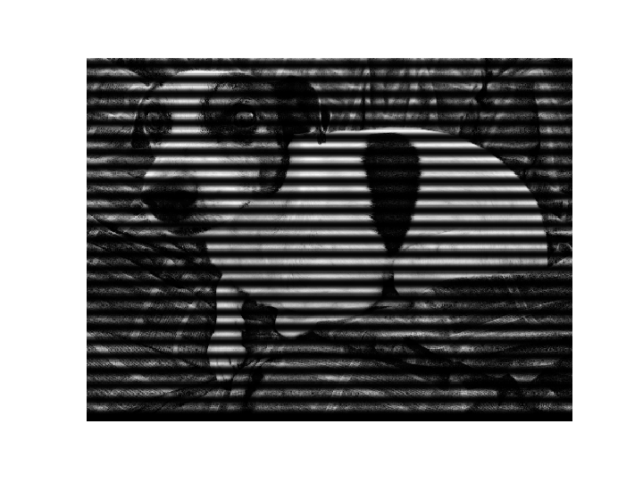
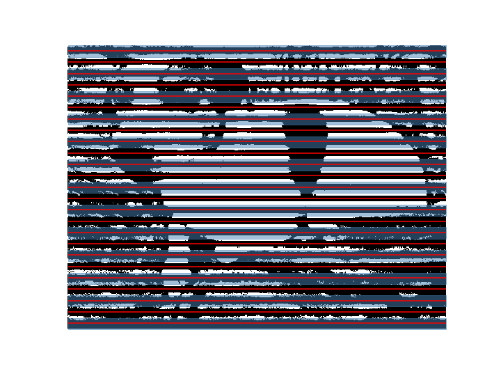
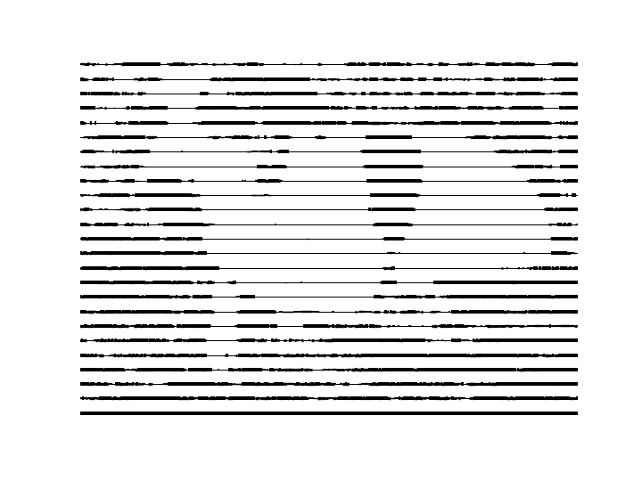
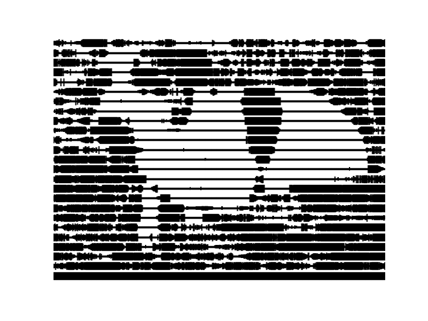
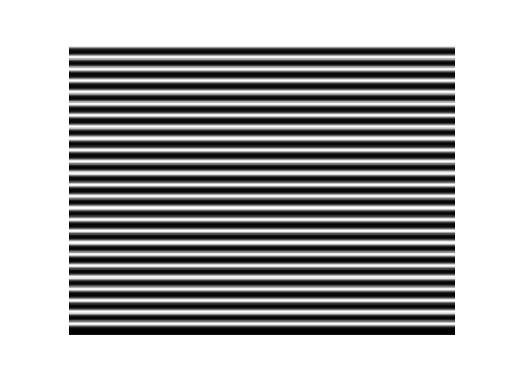
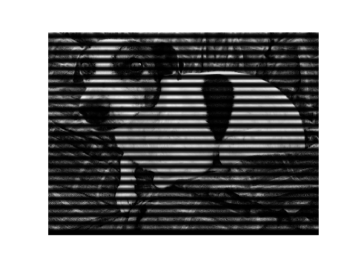
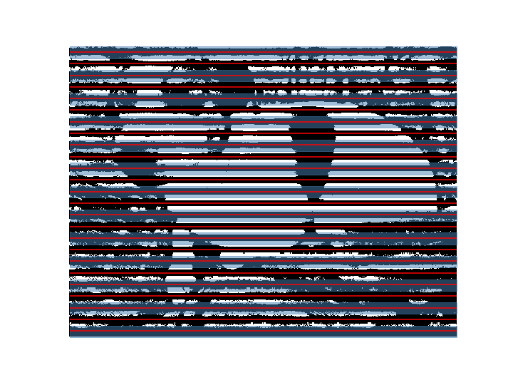
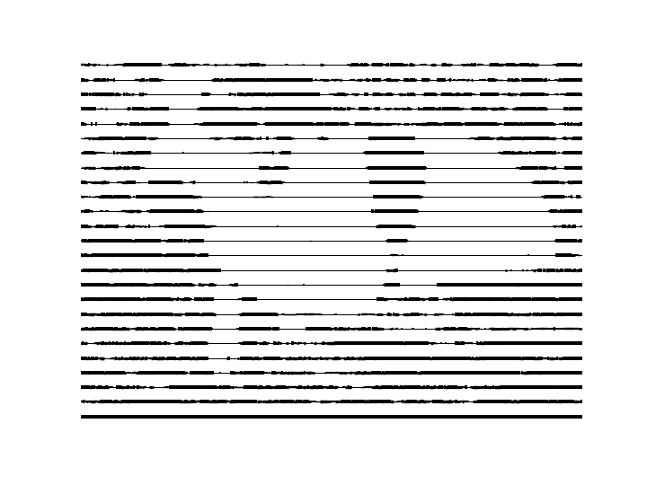
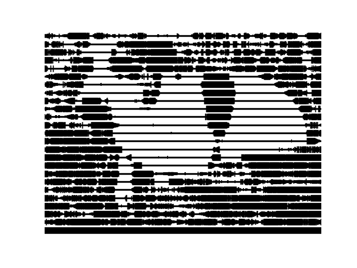

yourplotlib
Best practices for domain-specific matplotlib libraries
Colin Carroll, Hannah Aizenman, and Thomas Caswell
Introduction: Plotting should understand your domain
This essay is based on a talk given on November 5, 2019 at PyData New York. Original slides are available here. All the code for producing the plots is available on in this repo. It is (of course) produced with matplotlib, with gracious assists from NumPy, SciPy, and Project Jupyter.
There is a tension in matplotlib between being a library and an application. A library seeks to provide stable and useful APIs for application builders, while an application tries to "do the right thing". You can think of this essay as some steps towards using matplotlib productively as a library to build applications for your own domain or data.
There are numerous popular libraries that already follow this advice:
- ArviZ for plotting Bayesian data Colin is one of the creators of ArviZ, while Hannah and Thomas are maintainers of matplotlib. Two years of interaction between a domain-specific author and general purpose maintainers is what inspired this talk/essay.
- Seaborn for statistical data visualization
- plotnine, an implementation of a
grammar of graphics The R library ggplot2 helped popularize the grammar of graphics in
the data science world. The codebase for plotnine is also remarkably clean and worth a read
if you are trying to do anything tricky and custom with
Artists. DataFrame.plot(pandas) andDataArray.plot(xarray) for labelled arrays- basemap Deprecated in favor of cartopy, cartopy, and geoplot for geospatial data
- scikit-learn has a new plotting API that works closely with domain-specific objects
- grave and nxviz for network data
A more complete and up-to-date listing of 3rd party packages is on the matplotlib website Pull requests welcome and encouraged!.
1. Stylesheets
Whether you are in a lab setting, a data science team, open source project, or individual writing blog posts, perhaps the easiest thing to do is to make a custom stylesheet. This takes less than an hour and can be reused forever. Think of it as marketing for your visualizations: a consistent and distinctive style can help you stand out and be memorable.
Many styles already ship with matplotlib, and you can try using one out right now. The default stylesheet matplotlib uses has 10 colors it cycles through that were carefully picked, and will be applied if you do nothing.
import matplotlib.pyplot as plt
plt.style.use('default')
You can restore an older, "classic" matplotlib style that uses 7 colors, outlined markers, and larger figures:
plt.style.use('classic')
The ggplot2 theme has become quite recognizeable, and ships with matplotlib. Notice the
light gray background and subtle white axes One of the first statistics (and programming, and
visualization) lectures Colin ever attended was as a graduate student at Rice University, and was
given by Prof. Hadley Wickham on his new library ggplot2. He
also gave the specific advice to customize your theme to be anything but the default, and
indeed the ggplot2 default theme was quite striking!.
plt.style.use('ggplot')

The style that the writers and dava visualization team at FiveThirtyEight use is also quite distinctive. Notice the bold colors and thick lines, which are ideal for display graphics, if harder to use for exploratory visualizations.
plt.style.use('fivethirtyeight')

Colin uses a custom stylesheet So the following code will only work if you first install his stylesheet. heavily inspired by Edward Tufte In fact, translating the CSS that this essay also uses into matplotlib styles., as well as by the Altair Another implementation of the grammar of graphics, based on Vega and Vega-Lite. library, which also uses the hollow circles as a default marker.
plt.style.use('tufte')
Experimenting with stylesheets
We can look at one way of interactively building a custom styling. We do this by updating the
rcParams object, which behaves like a dictionary. First, we make some standard plot that
looks generally like the sorts of plots we want to deal with.
plt.plot(*np.random.randn(50, 2))

First, we adjust the default size for the figure. This is designed for talks and essays, so a wide, not-very-tall figure is appropriate.
plt.rcParams.update({
plt.rcParams.update({
"figure.figsize": [10.0, 3.0],
})
plt.plot(*np.random.randn(50, 2))
Now we can update colors. This talk was delivered at PyData New York , and we can imagine we are building a domain-specific
library for making plots for PyData conferences. The easiest thing we can do is take these distinctive
colors from the PyData logo as our default colors:
, and we can imagine we are building a domain-specific
library for making plots for PyData conferences. The easiest thing we can do is take these distinctive
colors from the PyData logo as our default colors:
plt.rcParams.update({
"axes.prop_cycle": plt.cycler(
"color",
["#EE9041", "#459DB9", "#667B83"]),
})
plt.plot(*np.random.randn(50, 2))

Next, we update the default marker from None to a diamond, again borrowing from the
PyData motif:
plt.rcParams.update({
"lines.marker": "d",
})
plt.plot(*np.random.randn(50, 2))

We can remove the lines, so that by default we get a scatterplot instead of a line plot
plt.rcParams.update({
"lines.linestyle": "",
})
plt.plot(*np.random.randn(50, 2))
Then making the markers bigger, so we can actually see them Note we are cheating and adding
clip_on=False here, which lets our markers get drawn outside the axis limits..
plt.rcParams.update({
"lines.markersize": 48.0,
})
plt.plot(*np.random.randn(50, 2), clip_on=False)
Removing the bounding box (called spines), as well as the axis ticks on
the bottom and the left gives this a more artistic look. Note while we are doing this that we could
instead
leave some subset of the spines visible, or move the axis ticks to the top or right of a plot.
plt.rcParams.update({
"axes.spines.bottom": False,
"axes.spines.top": False,
"axes.spines.left": False,
"axes.spines.right": False,
"xtick.major.bottom": False,
"ytick.major.left": False,
})
plt.plot(*np.random.randn(50, 2), clip_on=False)
Finally, for some artistic flair and pop, we add a thin outline to the markers:
plt.rcParams.update({
"lines.markeredgecolor": "black",
})
plt.plot(*np.random.randn(50, 2), clip_on=False)
This is now a stylish default! Note that it helps us create a certain kind of plot with minimal code. Whether or not this is the kind of plot you want is up to you. Remember: your plotting should understand your domain.
x = np.linspace(-4, 4) plt.plot(x, np.cos(x), clip_on=False) plt.plot(x, np.sin(x), clip_on=False) plt.plot(x, -np.cos(x), clip_on=False)

Saving your style
Once you have a style you like, you can save your updated rcParams to a stylesheet. A few
parameterss need special care to encode in the format, but it is reasonably easy to pattern match. See
the FiveThirtyEight
stylesheet or Colin's custom
stylesheet for examples of the format.
To find where to save this stylesheet, you use the "stylelib" directory in your matplotlib configuration directory. You can find the location of this by running
from pathlib import Path print(Path(matplotlib.get_configdir()) / "stylelib")
On my computer, I have a file at ~/.config/matplotlib/stylelib/tufte.mplstyle, which
lets me run
plt.style.use("tufte")
and be all set.
There are also ways to pip install styles, so you can distribute custom stylesheets using
Python packaging. One way is to follow ArviZ's approach, and
add your stylesheet directory to matplotlib's search path on import:
# __init__.py from matplotlib.pyplot import style # add ArviZ's styles to matplotlib's styles arviz_style_path = os.path.join(os.path.dirname(__file__), "plots", "styles") style.core.USER_LIBRARY_PATHS.append(arviz_style_path) style.core.reload_library()
Wrap common plots in functions
Our goal is to ease and encourage the use of plots, and after updating stylesheets, it is easy to start writing small functions implementing default behavior.
def confetti(N, *, ax=None, **kwargs):
if ax is None:
ax = plt.gca()
my_artists = ax.plot(*np.random.randn(N, 2),
clip_on=False, **kwargs)
return my_artists
A few notes on this function:
- The
*in the arguments is a Python 3 feature that requires the user to supply exactly one positional argument:confetti(10, ax)throws an error, whileconfetti(10, ax=ax)works. - The block that handles
if ax is None:will get the current axes or create a new one. If we had wanted, we could have always created new axes usingplt.subplots(). Calling plot on a pandasSeriesusesplt.gcawhile aDataFrameusesplt.subplots. This is a domain-specific choice! - We pass on keyword arguments other than
axto the underlying matplotlib function. - The function returns all the Artists added to the axes, for the user to customize.
We might also implement a more general version of the curvy plot from above:
def solitare(x, *, ax=None, **kwargs):
if ax is None:
ax = plt.gca()
kwargs.setdefault('clip_on', False)
my_artists = ax.plot(x, np.cos(x),
x, np.sin(x),
x, -np.cos(x),
**kwargs)
return my_artists
Now we can use these plots in three ways:
On their own:
confetti(42)

On the same axes:
confetti(20, marker="*", markersize=50) confetti(87, markersize=10)
On multiple axes:
fig, (ax1,ax2) = plt.subplots(nrows=2) solitare(np.linspace(-np.pi, np.pi), ax=ax1, markersize=30, marker='$\infty$') confetti(13, ax=ax2, marker='>')

Build Custom Plots with Artists
Sometimes your goal visualization requires more customization or performance than the high level
functions that matplotlib provides. This is where we start accessing functions from matplotlib the
library, rather than the application. Specifically, we will be using built-in
Artists, which are the building blocks functions like plot and
scatter are already using.
As an example of a custom functionality we may need, Colin is a fan of his dog He thinks it is important you know that his name is Pete, and that he is a good boy. and of hacking on images. We want to convert an image like this

To one like this

You can see the code in the attached Python file, but there is a
step
The process ends up looking like this: We convert to grayscale
 Create a blurred mask of white and black rows

Pointwise multiply the grayscale image (which is just a numpy array of intensities) with the smooth mask

Threshold the image, setting pixels darker than a certain level to black, and the rest to white
Divide into regions, and calculate how wide our lines should be at every x-position

Convert the image into lines of varying width (for which we need custom functionality!)

Make the lines wider, so it looks nicer

Smooth out the line widths, using a smoothing kernel
where we need to
make a line (in fact 30 lines) with a width
that varies. This is not built into
matplotlib, so we will build it ourselves.
Create a blurred mask of white and black rows

Pointwise multiply the grayscale image (which is just a numpy array of intensities) with the smooth mask

Threshold the image, setting pixels darker than a certain level to black, and the rest to white
Divide into regions, and calculate how wide our lines should be at every x-position

Convert the image into lines of varying width (for which we need custom functionality!)

Make the lines wider, so it looks nicer

Smooth out the line widths, using a smoothing kernel
where we need to
make a line (in fact 30 lines) with a width
that varies. This is not built into
matplotlib, so we will build it ourselves.
Using LineCollection to build a custom plot
First, we find the LineCollection artist, and see that it allows multiple lines with mapped colors.
Next, we see how it works:
fig, ax = plt.subplots()
lc = LineCollection(
segments=[
((0, 1), (1, 1), (2, 1), (3, 1)), # flat line
((0, 1), (1, 2), (2, 3), (3, 4)), # straight line
((0, 0), (1, 2), (2, 4), (3, 9)), # parabola
])
ax.add_collection(lc)
ax.set_ylim(0, 9)
ax.set_xlim(0, 3)

We notice a few things about the API:
- Initializing the class returns an instance, and we use
ax.add_collection(...)to add this artist collection to the axes. - We then also manually set the axis limits.
This is going to be more fine-grained control, and we will have to be more specific about what we plot.
Now we can apply some styles to the lines:
...
lc = LineCollection(
segments=...,
colors=('red', 'green', 'blue'),
linewidths=(4, 8, 12),
linestyles=('dashed', 'dotted', 'solid')
)
...

This is not quite what we want: each line has a separate style applied to it. What if instead, we make our single line out of a bunch of lines of length 1?
...
lc = LineCollection(
segments=[
((0, 0), (1, 2)),
((1, 2), (2, 4)),
((2, 4), (3, 9))
], ...
)
...

This looks like what we want! Notice that we used the endpoint of one segment as the start point of the next segment. But four points of a parabola is boring: how do we scale this up?
... x = np.linspace(-2, 2) y = x ** 2 points = np.vstack((x, y)).T # array([[-2. , 4. ], # [-1.91836735, 3.68013328], # [-1.83673469, 3.37359434], # [-1.75510204, 3.08038317],... segments = list(zip(points[:-1], points[1:]))
We create an \(N \times 2\) matrix of points on our line, and zip it with itself, offset by 1. This gives us the same sort of data as we had before: a list of \(N - 1\) "lines" of length 1, where the end point of one is the start point of the next. Putting this together, we can plot this:
fig, ax = plt.subplots() lc = LineCollection(segments=segments) ax.add_collection(lc) ax.set_ylim(-0.2, 4) ax.set_xlim(-2, 2)

Looking better! But we want to change linewidths along the length of this. We can do that by just passing a vector of the same length as the x-data:
linewidths = 30 * np.abs(np.sin(10 * x))
...
lc = LineCollection(
segments=segments,
linewidths=linewidths
)
...
While we are at it, we can edit other styles like color as well:
cmap = plt.get_cmap('viridis')
...
lc = LineCollection(
segments=segments,
linewidths=linewidths,
colors=cmap(np.abs(np.sin(5 * x))),
)
...

Make light wrappers for your use!
To keep pushing a point, you should make small functions and wrappers to make these plots easier for yourself and for others: your plotting should understand your domain. Here is the function to implement the flexible line plotting API we were just exploring:
def plot_line(x, y, linewidths=None, colors=None, ax=None):
points = np.vstack((x, y)).T
segments = list(zip(points[:-1], points[1:]))
if ax is None:
ax = plt.gca()
lc = LineCollection(
segments=segments,
linewidths=linewidths,
colors=colors,
)
ax.add_collection(lc)
# ...mess with scales...
return lc
Note we used the pattern from earlier with plt.gca(). This is not much code, but it enables
lots of exploration. We can play around with other parametric plots and be creative like with the
parabola earlier. Here is a Möbius strip:
t = np.linspace(0, np.pi * 2.0, 2_000)
cmap = plt.get_cmap('twilight')
colors = cmap(np.abs(np.cos(t * 1.25)))
plot_line(np.cos(t), np.sin(t), # circle
linewidths=40 * np.cos(1.5 * t), # 3 turns
colors=colors)
ax.axis('off')
We can also go back to our motivating example with Pete the pup, and try out the control we also have over color now:
Conclusion: Build the interface you need
Your plotting should understand your domain, and there are many levels at which this understanding can take place. In rough order of depth:
- Use a stylesheet to create a distinctive, consistent look.
- Write wrappers around
ax.plot,ax.scatter,ax.hist, and the like to build the API you want. - Write your own functions that instantiate
Artists likeLineCollection. - Write your own
Artistclasses that reimplementdrawWe did not cover implementing a custom Artist here, since it is a much bigger topic than a 30 minute talk. This is very powerful, and very flexible. See grave for an example of this..
Matplotlib is an active library, and is interested in helping science advance, and helping you better visualize your data Or dog.. In particular,
- If you need help packaging your plotting library or stylesheet to be pip-installable, reach out! Packaging is hard, and we want you to succeed.
- If you have other general questions, join the discussion on matplotlib's new discourse.
- Share what you build, if you are comfortable! A twitter account shares beautiful plots, the third party package listing spreads the word of domain-specific libraries, and of courseissues and pull requests may be filed.